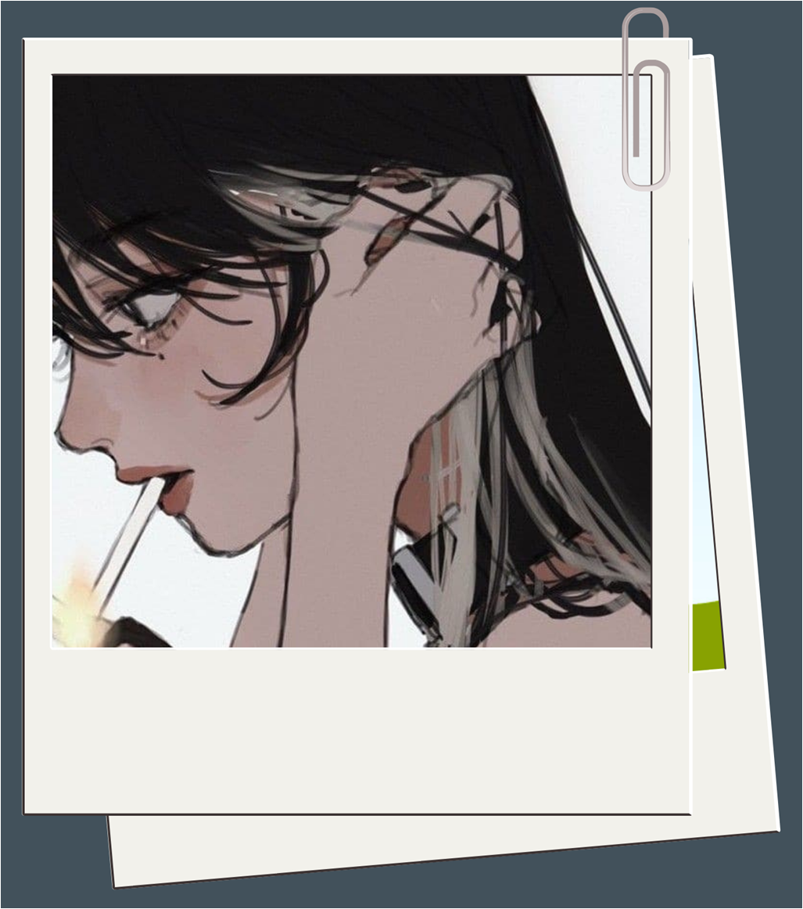

A very short life story
of a girl named
Gray
With my 19 years of existence in this flawed world, I can't help but to think of the past years that passed like a blur. I didn't even notice how far I've gone since the last time I started how to walk as a toddler. Have been to so many places but still my favorite place is my home especially my room, it's kinda messy but comforting.

Growing up I never thought or plan anything in the future, more like whatever comes then that's what I'll work on because sometimes what you expect turns out to be the opposite of what you'll get. Honestly I really don't have a dream job, when I was younger all I want is to grow taller. With my current height (163 cm) I still feel small beside my cousins.
I like to observe people although sometimes it's quite embarassing to do because they might think that my stares mean something but in reality I was already judging them silently (haha just kidding).
I never really go out the house unless my friends, my cousins or my family and I have a plan to spend our day outside. I'm very introverted and would most likely to stay at home than wander outside besides being at home makes me feel at ease always. Sometimes I tend to be alone but also sometimes I want to hang-out with people mostly with just my family. I want to be alone for some moments but I obviously can't live alone I'm a strong and dependent woman you know haha! Despite my behavior being like this don't mistake me for being lonely because I just find peace and I can do my hobbies without interruptions. Also when I'm watching dramas or any videos and reading books or e-books I often drift into my own world so at times I laugh all on my own or cry because of the mood.
My desk is like my life, full of useful and meaningful things but at the same time it has annoying things and sometimes things that I don't know I have or bought out of my desires but whenever I see my desk I feel satisfaction because that is where I can see what I have done to kill my time. I don't know, I feel motivated having my own space. I used to love writing but when I got busy in school I felt so busy that I lost my touch about it. Though I'm still collecting stickers just in case I want to start writing a journal. I've been also practicing my drawing skills since I really want to work on it because it's one of my weaknesses.
My boredom exists in my own way like it has its own mood. Most often I'd listen to music and do whatever I want. One of my bestfriends is my earphones so I feel uneasy whenever I have my phone or use a computer without my earphones. When busy onto something I also like to munch on a snack or drink beverages, I really love milk or beverages that involves milk. I also try to use the music to widen my imagination since music conveys a story or a meaning and so I try to come up with scenarios relating to the music. When I really have nothing to do I go to YouTube just to watch random videos, I easily get entertained with trivias and animals.
Since one of my talents is overthinking I'd like to forget unnecessary thoughts by travelling to different countries and the first place I'd like to go is where my bestfriend lives which is in America. I want to surprise her and we'll travel around together along with our other friends. It was initially her plan, she wants us to go to places together and just have fun especially that it's been years since we last saw each other. Apart from that my cousins and I want to go to Japan because of One Piece, a masterpiece made by Eiichiro Oda. Of course all of these are just plans but I do hope that one day we'll be able to do it.

Having to learn about Computer Fundamentals and Programming led by our professor,
sir Reb was very worth the time. We got to learn about how the internet and computer
works by looking at a deeper and wider perspective about it. Coding was also very fun
to learn, it seemed hard at first but with knowledge and practice, we were able to understand
and apply it on our own. Sir Reb also made additional inputs to our reporting for clarity.
He also gives us life lessons that we can use for the future.
I guess that's it! Thanks~